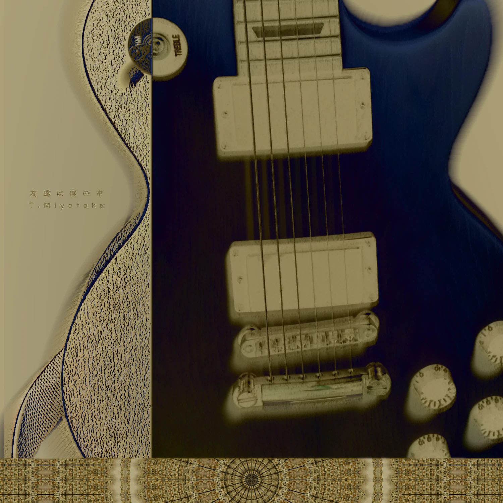
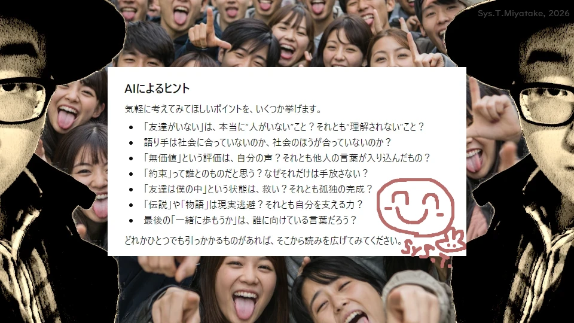

Music: "友達は僕の中, A Body Left Unheard (?Tomodachi?)";
Summary
説明を表示...
"孤独と無理解と内面化と神話化されし下僕"
アーカイブするにあたって最も躊躇した楽曲のひとつです．その理由は「恥ずかしいから」に他なりませんが，剥き出しの感情が思いがけず社会の輪郭をなぞってしまっており，案外どこかで皆さんにも響くのではないかと思っています．
（とはいえ数年ぶりに聴いた叫び「🎤オレには盟友いねえ〜！😡」にはうっかり爆笑してしまった私がいました🤫）
恥も外聞もなく，粘膜のまま差し出された自分．
『友達は僕の中』 by T.Miyatake
Artwork

Lyrics
Image Content
この作品をコンセプチュアルにお愉しみいただくために画像作品を制作しました．
AIに生成させた「ヒト集団(false)の写真」と「問いとして有用なテクスト例(undefined)」を素材に用いて，またしてもホモ・サピエンス(true)が暗躍しているようです．
👁️（あの頃の自分がこちらを睨みつけています．）👁️

Song Content (1)
demo版, 2018
"恋人も僕の中"
間奏のシンセソロがこんなにも切ないのはなぜでしょうか……？
※この楽曲は完成していないため，demoの最新版ファイルを掲載しています．
Get Properties
Words&Music : T.Miyatake, 2018;
Audio-player: Sys.T.Player(v.beta);
File-format : Stereo, mp3;
Source-name : tomodachi_demo_2018;
Copyright © : SYS. T. Miyatake;
『友達は僕の中 (demo), 2018』
00:0000:00